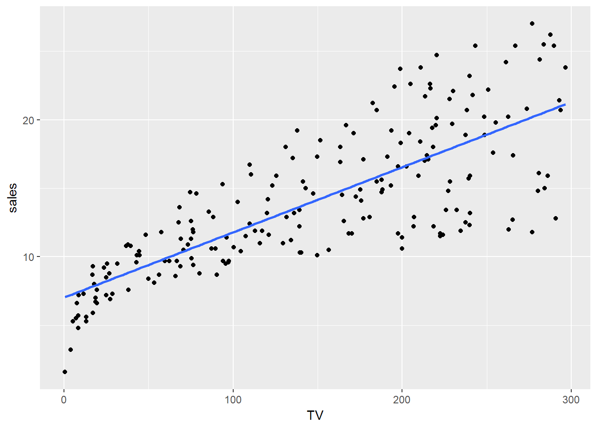
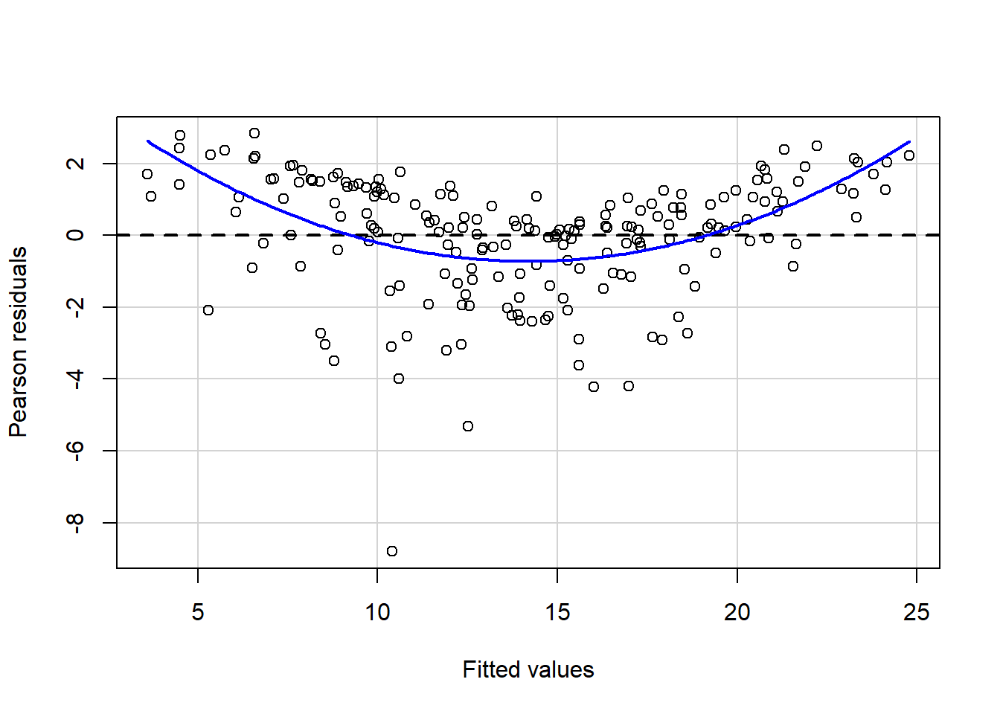
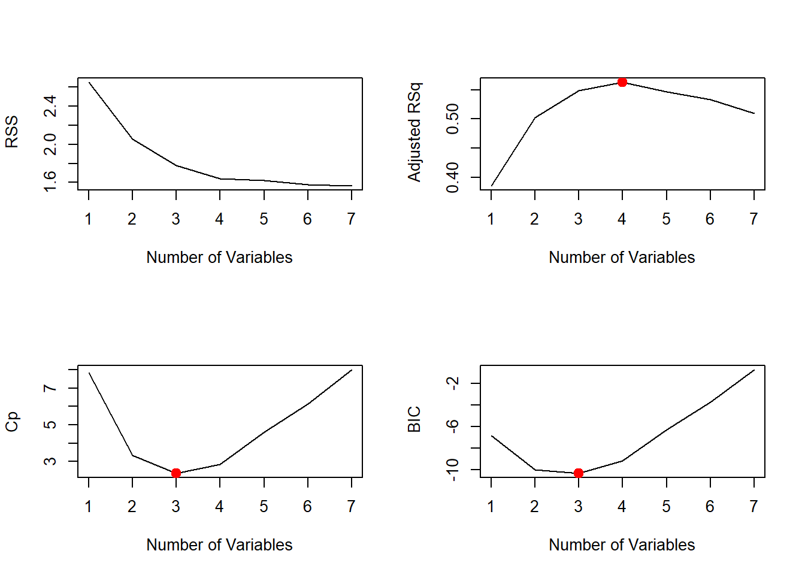
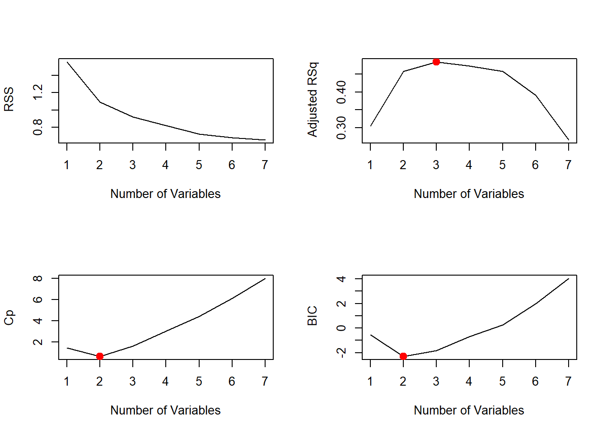
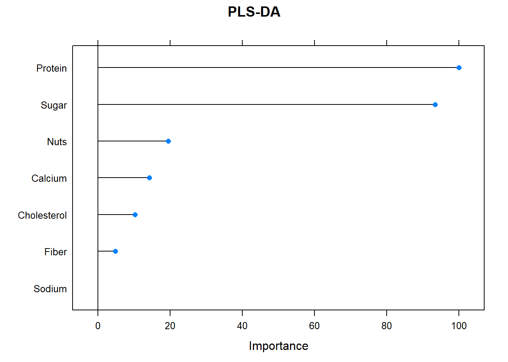

Here we have a dataset with advertising information. It displays sales (in thousands of units) for a product, as a function of advertising budgets (in thousands of dollars) for TV, radio, and newspaper media.
Suppose that in our role as analysts we are asked to suggest, based on this data, a marketing plan to increase sales. What information would be useful to provide such a recommendation?
First, let’s explore the data…
TV radio newspaper sales
Min. : 0.70 Min. : 0.000 Min. : 0.30 Min. : 1.60
1st Qu.: 74.38 1st Qu.: 9.975 1st Qu.: 12.75 1st Qu.:10.38
Median :149.75 Median :22.900 Median : 25.75 Median :12.90
Mean :147.04 Mean :23.264 Mean : 30.55 Mean :14.02
3rd Qu.:218.82 3rd Qu.:36.525 3rd Qu.: 45.10 3rd Qu.:17.40
Max. :296.40 Max. :49.600 Max. :114.00 Max. :27.00 Histogram and boxplot for sales.
What do we want to do?
A marketing plan to increase sales! Maybe this includes answering the following:
It turns out that linear regression can be used to answer each of these questions!
The first thing to remember, is that a linear regression assumes that there exists a linear relationship between the response variable and the explanatory variable. This means that you can fit a line between the two.

This is a very simple approach to predicting a quantitative response (in our case sales) in terms of a single predictor variable (TV perhaps). In this case, the mathematical representation of this model would be: \[sales = \beta_{0}+\beta_{1}*TV\]
\(\beta{0}\) and \(\beta{1}\) are the intercept and a slope of the line describing this relationship. They are known as the model coefficients. Once we estimate these, we can predict future based on a particular value of TV advertising.
This is equivalent to finding an intercept \(\beta{0}\) and a slope \(\beta{1}\) such that the resulting line is as close as possible to the data points.
There are many ways of measuring closeness. However, the most common approach is the least squares criterion. This is in essence, minimizing the differences between the real values and the values predicted by the line in our model.
In this image, we see how each grey line segment represents an error (residual), and the fit makes a compromise by averaging their squares.
Standard errors can also be used to perform hypothesis tests on the coefficients. In a lm we test the null test hypothesis of H0: There is no relationship between X and Y.
To test the null hypothesis, we need to determine whether our estimate for \(\beta{1}\), is sufficiently far from zero (significant). In practice, we compute a t-statistic, which measures the number of standard deviations that \(\beta{1}\) is away from 0. Then, we estimate the probability of a given t, assuming \(\beta{1}\) = 0. We call this probability the P-value.
If P-value is small, we can infer that there is an association between the predictor and the response (reject null hypothesis). Typical p-value cutoffs for rejecting the null hypothesis are 5 or 1%.
| Estimate | Std. Error | t value | Pr(>|t|) | |
|---|---|---|---|---|
| (Intercept) | 7.0325935 | 0.4578429 | 15.36028 | 0 |
| TV | 0.0475366 | 0.0026906 | 17.66763 | 0 |
Notice that the coefficients are very large relative to their standard errors, so the t-statistics are also large; the probabilities of seeing such values if H0 is true are virtually zero.
The formula describing this model is \[sales = 7.03+0.05*TV + Error\]
Error in the formula represents the deviation of the estimated values vs the true response.
Using a simple linear model we can infer that an increase of $1,000 in the TV advertising budget is associated with an increase in sales by around 50 units
Once we detected there is a relationship between TV and sales, we might want to quantify the extent of these.
The quality of a lm is typically assessed using: Standard Residual Error (SRE) and the \(R^{2}\) statistic.
This is the average amount that the response will deviate from the true value. A measure of the lack of fit, in the same units of y.
\[SRE = sqrt(\frac{1}{n-2}*RSS) = sqrt(\frac{1}{n-2}*\sum_{i=1}^{n}(y_{i} - y_{est})^2)\] sum of squares residual (SSR or RSS)
lm_sales_tv_sum$sigma## [1] 3.258656In our case, actual sales deviate from the true values by aprox. 3,260 units, on average. If we recall from our previous descriptive analysis, the mean of sales was 14,000 units, and so the percentage error is 3,260/14,000 = 23%.
Is the proportion of variance explained.
\[R^2 = \frac{TSS-RSS}{TSS} = 1 - \frac{RSS}{TSS}\]
\(TSS= \sum_{i=1}^{n}(y{i} - mean)^2\)
TSS measures the total variance in the response Y. In contrast, RSS measures the amount of variability that is left unexplained after performing the regression. An \(R^2\) close to 1 indicates that a large proportion of the variability in the response has been explained by the regression.
lm_sales_tv_sum$r.squared## [1] 0.6118751The \(R^2\) for our sales lm was 0.61, and so just under two-thirds of the variability in sales is explained by a linear regression on TV.
Do all three media (TV, radio, and newspaper) contribute to sales? How to extend lm to more than 1 predictor?
This is also a measure of the linear relationship between X and Y. The degree of association is measured by a correlation coefficient.
We could use a correlation matrix to help us understand this.
Correlation Matrix
A strong relationship is shown by either stronger colors in the matrix or with numbers greater than 0.5.
In our case, we could highlight the following:
Does it mean fitting multiple simple linear regression model for each predictor?
| Estimate | Std. Error | t value | Pr(>|t|) | |
|---|---|---|---|---|
| (Intercept) | 9.3116381 | 0.5629005 | 16.542245 | 0 |
| radio | 0.2024958 | 0.0204113 | 9.920765 | 0 |
| Estimate | Std. Error | t value | Pr(>|t|) | |
|---|---|---|---|---|
| (Intercept) | 12.3514071 | 0.6214202 | 19.876096 | 0.0000000 |
| newspaper | 0.0546931 | 0.0165757 | 3.299591 | 0.0011482 |
A $1,000 increase in spending on radio advertising is associated with an average increase in sales by around 203 units, while the same increase in spending on newspaper advertising is associated with an average increase in sales by around 55 units.
There are several limitations for this approach:
A better approach is to extend the simple linear regression model so that it can directly accommodate multiple predictors.
\[Y = \beta_{0} + \beta_{1}X1 + \beta_{2}X2 + · · · + \beta_{p}Xp + Error\]
As in the case of the simple linear model, the objective here is to estimate the coefficients minimizing the sum of squared residuals.
| sales | |||
|---|---|---|---|
| Predictors | Estimates | CI | p |
| (Intercept) | 2.938889 | 2.327560 – 3.550218 | <0.001 |
| TV | 0.045765 | 0.043031 – 0.048499 | <0.001 |
| radio | 0.188530 | 0.171652 – 0.205408 | <0.001 |
| newspaper | -0.001037 | -0.012544 – 0.010469 | 0.860 |
| Observations | 200 | ||
| R2 / R2 adjusted | 0.897 / 0.896 | ||
[1] "Model p-value: < 2.2e-16"We interpret these results as follows:
Let’s go back to our initial questions for the Marketing Plan.
\[ sales = 2.938889 + 0.045765* TV + 0.188530*radio -0.001037*newspaper\] 3. Should we spend the same amount of money in each media?
The model that uses all three advertising media to predict sales has an \(R^2\) of 0.897 and RSS = 1,457 units (10%).
What happens if we use a model with only TV and radio, as newspaper is not significant?
lm_sales_tv_radio <- lm(sales ~ TV + radio, data= sales_df)
lm_sales_tv_radio %>% summary()
Call:
lm(formula = sales ~ TV + radio, data = sales_df)
Residuals:
Min 1Q Median 3Q Max
-8.7977 -0.8752 0.2422 1.1708 2.8328
Coefficients:
Estimate Std. Error t value Pr(>|t|)
(Intercept) 2.92110 0.29449 9.919 <2e-16 ***
TV 0.04575 0.00139 32.909 <2e-16 ***
radio 0.18799 0.00804 23.382 <2e-16 ***
---
Signif. codes: 0 '***' 0.001 '**' 0.01 '*' 0.05 '.' 0.1 ' ' 1
Residual standard error: 1.681 on 197 degrees of freedom
Multiple R-squared: 0.8972, Adjusted R-squared: 0.8962
F-statistic: 859.6 on 2 and 197 DF, p-value: < 2.2e-16The value of \(R^2\) will never decrease when adding an extra predictor to the model, and this can lead to over-fitting. Adjusted \(R^2\) reduces the value of \(R^2\) until it becomes an unbiased estimate. It only increases if it reduces the overall error of the predictions is increased by adding an additional variable.
Another good way to test the quality of the fit of the model is to look at the residuals. An important assumption of the lm is that the error is uncorrelated and randomly distributed.
In the previous summary, we notice how the residuals are approximately zero. Nevertheless, we also need to check if they have any trend.
lm_sales_tv_radio %>% residualPlot()
Notice that there is a pattern (like a curve on the residuals). This is not random at all and can be a problem. If we have more data, our linear model will not be able to generalize well.
It suggests a synergy or interaction effect between the advertising media, whereby combining the media together results in a bigger boost to sales than using any single medium.
One way of extending this model to allow for interaction effects is to include a third predictor, called an interaction term (TV*radio). This results in the model:
\[sales = \beta{0} + \beta{1}TV + \beta{2}radio + \beta{3}TVradio + Error\]sales_df[, TVradio := TV*radio]
lm_inter <- lm(sales ~ TV + radio + TVradio, data= sales_df)
tab_model(lm_inter, file="summary2.html")| sales | |||
|---|---|---|---|
| Predictors | Estimates | CI | p |
| (Intercept) | 6.75 | 6.26 – 7.24 | <0.001 |
| TV | 0.02 | 0.02 – 0.02 | <0.001 |
| radio | 0.03 | 0.01 – 0.05 | 0.001 |
| T Vradio | 0.00 | 0.00 – 0.00 | <0.001 |
| Observations | 200 | ||
| R2 / R2 adjusted | 0.968 / 0.967 | ||
In conclusion:
(96.8 - 89.7)*100/(100 - 89.7)[1] 68.93204of the variability in sales that remains after fitting the additive model.
Here, let’s explore how to pick best regressors and assess the model fit in a multivariate scenario.
Correlation Matrix
VIF The variance inflation factor (VIF) quantifies the extent of correlation between predictors. It is used for diagnosing collinearity/multicollinearity. Values of 10 or more are considered very high.
| Cholesterol | Sodium | Fiber | Sugar | Protein | Calcium | Nuts |
|---|---|---|---|---|---|---|
| 2.1 | 1.15 | 2.62 | 2.59 | 2.45 | 1.45 | 1.86 |
| Calories | |||
|---|---|---|---|
| Predictors | Estimates | CI | p |
| (Intercept) | 5.51 | 3.53 – 7.49 | <0.001 |
| Cholesterol | 1.00 | -1.35 – 3.36 | 0.415 |
| Sodium | -0.19 | -0.34 – -0.03 | 0.030 |
| Fiber | 5.40 | -8.26 – 19.06 | 0.449 |
| Sugar | -2.05 | -4.92 – 0.83 | 0.181 |
| Protein | 7.35 | 0.35 – 14.35 | 0.055 |
| Calcium | 0.99 | -1.66 – 3.64 | 0.475 |
| Nuts | -0.06 | -0.40 – 0.27 | 0.717 |
| Observations | 25 | ||
| R2 / R2 adjusted | 0.653 / 0.510 | ||

[1] "rss- min: 1.78057864159931"
[1] "adjr2- max: 0.548423775117918"The Cp (Mallow’s Cp ) and BIC (Bayesian information criterion) statistic add a penalty to the training RSS in order to adjust for the fact that the training error tends to underestimate the test error. (to account for the bias due to overfitting)
the model with the lowest BIC is the 3-variable model that contains only Sodium, Sugar and Protein.
coef(regfit.full, 3) %>% round(2) %>% t() %>% PrettyTable("Best Regressors coefficients")| (Intercept) | Sodium | Sugar | Protein |
|---|---|---|---|
| 5.89 | -0.2 | -2.25 | 7.99 |
Here we measure the error directly using the test data set.

[1] "rss- min: 1.08964249153976"
[1] "adjr2- max: 0.45817073977215"| (Intercept) | Cholesterol | Sugar |
|---|---|---|
| 6.61 | 3.04 | -3.94 |
It’s good practice to use a train/test approach with cross-validation…
This is an alternative for least squares approach.
[1] "Error : 0.119560031541567"| (Intercept) | Cholesterol | Sodium | Fiber | Sugar | Protein | Calcium | Nuts |
|---|---|---|---|---|---|---|---|
| 0 | 0 | -0.006 | 0 | -1.025 | 3.981 | 0.005 | 0 |
| Calories | |||
|---|---|---|---|
| Predictors | Estimates | CI | p |
| (Intercept) | 5.91 | 4.31 – 7.51 | <0.001 |
| Sodium | -0.19 | -0.33 – -0.05 | 0.017 |
| Sugar | -2.47 | -4.91 – -0.03 | 0.061 |
| Protein | 7.12 | 0.84 – 13.39 | 0.038 |
| Calcium | 1.41 | -0.72 – 3.54 | 0.209 |
| Observations | 25 | ||
| R2 / R2 adjusted | 0.636 / 0.563 | ||
If we choose to use all the available predictors, we can overcome collinearity issues by applying this.
PLS is a supervised alternative to Principal Component Regression (PCR), where the approach attempts to find directions that help explain both the response and the predictors.The first 3 components are able to explain 60% of the calories variance
[1] "Error : 0.168368370388753"Regressors Importance
With this in mind, we run an importance graph. Here, importance is based on how much a regressor explains the components used to predict Calories For Calories, the primary drivers are: Protein and Sugar.
mod1 <- train(frmla2, data = df_bars, method = "pls", preProc = c("center","scale"))
plot(varImp(mod1), main = "PLS-DA")
Check on regressors collinearity before including them in the model.
Avoid mixing data with high structural collinearity
Use more robust statistics, like BIC instead of RSS to determine the best relationships between regressors and response variable.
Use adjusted R-square instead of regular R-square
Check residuals and transform data prior to model fitting if necessary
Pick the simplest scientific explanation that fits the evidence.
Have fun!
See Power BI
A work by K.W. & H.M.
hubert.marcus@ihsmarkit.com
kenia.way@ihsmarkit.com